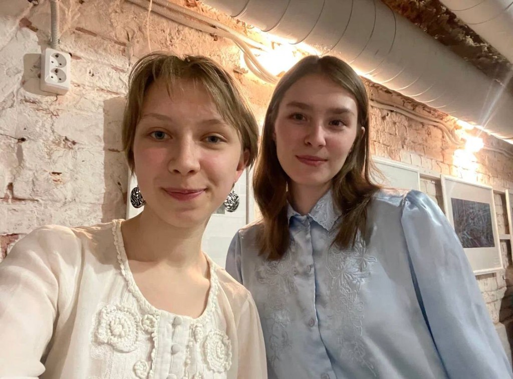
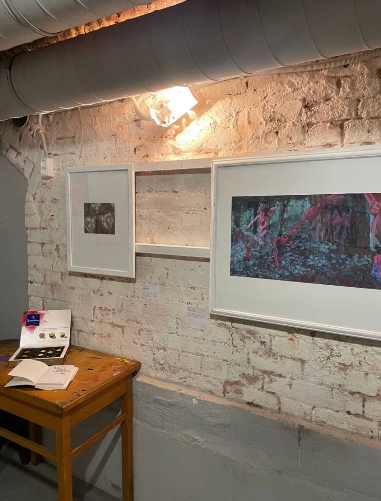
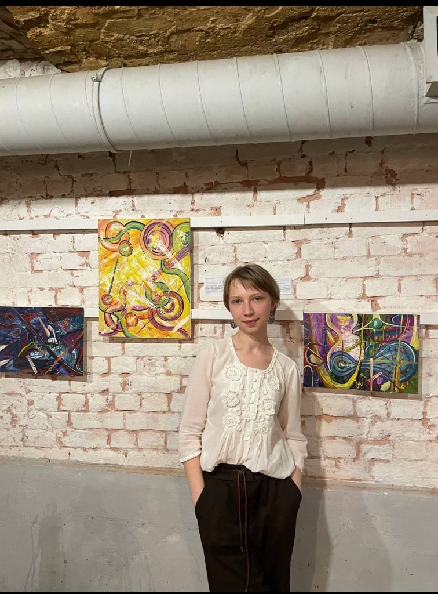
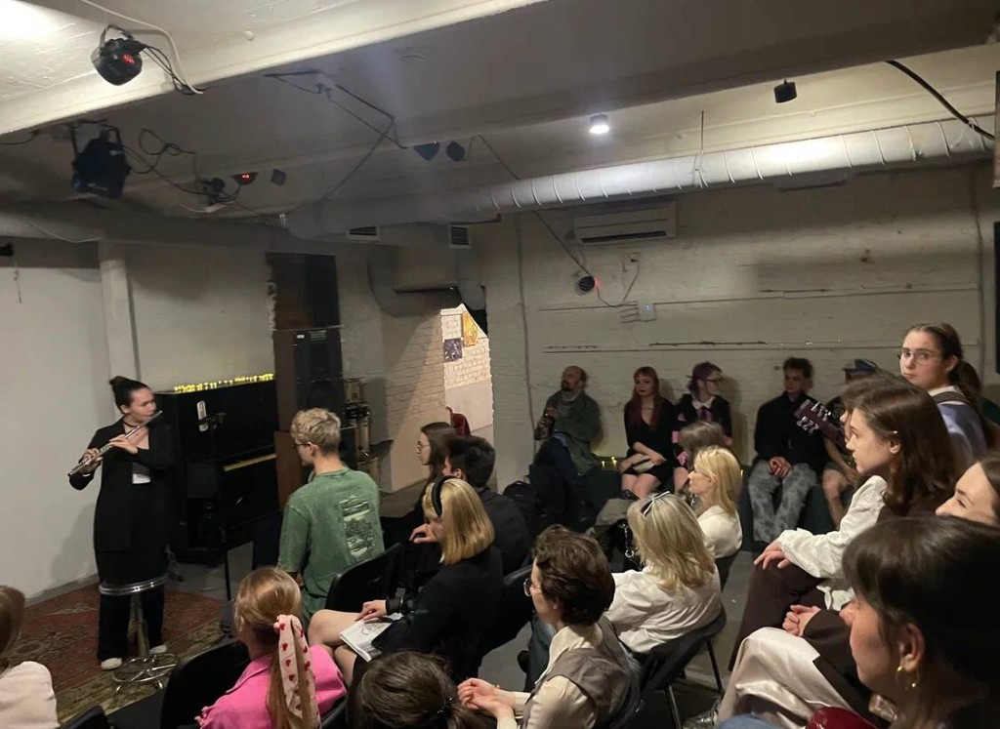

Художественное кураторство давно стало ведущей формой современного мышления. Зрелище, прячущееся в выражениях «картина мира», «взгляд на мир» и т. д., «театр» в его однокоренном спряжении со словом «теория», вырвались наружу с описанным Валерием Савчуком иконическим поворотом. Данный поворот переходит в острую фазу со взрывным развитием нейроморфических инструментов (так называемых нейронок), заполнивших мертвящим шлаком все виртуальные пространства, вытолкнувших из цифры живой ум, актуализировавших живое общение и аналоговый вне-виртуальный контакт с образом, — можно назвать это обострением эксгибиционной (а говоря по-русски, «выставочной») стадией иконического поворота. Деррида и сам Лиотар не случайно увенчали свои философские проекты проектами выставочными. Осознавая все это, Музей философии активно наращивает плотные связи с кураторскими исследованиями Санкт-Петербурга и открывает свою новую уникальную коллекцию Первых кураторских опытов. Ввиду чего, весной-летом 2026 года в закрытом экспериментальном режиме был проведен пробный запуск кооперации преподавателей кураторских исследований Санкт-Петербурга и Музея философии для поддержки первых опытов курации, поиска и картографирования истоков художественной воли в ее современном самосознании.

В качестве первой половины отчета предлагаем Вашему вниманию проект «Сквозь миры» молодых кураторов Дарьи Чижовой и Марии Пахомовой. Молодые художественные деятели объединили плеяду столь же юных и подающих надежды художников и представили ряд художественных произведений в галерее культового книжного «Фаренгейт». На вернисаже были представлены музыкальные номера в исполнении других студентов.



В рамках проекта в дальнейшем предполагается помощь первым шагам кураторов и/или художников, вовлеченных в современные средства художественной выразительности. Преподаватели кураторства берут на себя обязанности по помощи поиска платформы, методологического вооружения, практической оснащенности проекта. Музей же берет на себя обязанность кодификации, анализа и метаэкспонировки такого рода первых опытов. В дальнейшем предполагается построение своего рода алфавита истоков постнейроморфического творчества.